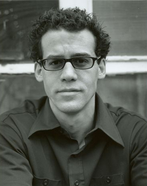
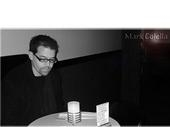

Mark Colella - Comedian

'"I
think he's ready to break out," Bennie Hengel of Hilarities 4th Street
Theatre
says of Mark Colella.' - Cleveland Magazine
Mark's
seemingly fragile, Woody Allen-esque presence on stage is sheep's clothing for
a sharp, left-of-center,
sometimes brutal, but always-hysterical wit enveloped with deliciously dark
material and a dry laid back
delivery which earned him the title 'Best Local Stand-up Comedian' in Cleveland
Magazine's Best of Cleveland issue.
During
a two-year stint in Georgia, Mark represented Atlanta's comedians in the Las
Vegas Comedy Festival
and made his national television debut when he played an over-worked snack bar
manager opposite Carlito Carribean
on UPN's WWE Smackdown. Upon moving back to his hometown he won the Carnival
(Cruise Lines) Comedy Challenge for Cleveland.
As
a side project, Mark recently joined forces with a veteran magician to co-star
in "The Kuputska Brother's
Extraordinary Magical Extravaganza", a live magic/comedy show. Mark also
performs improv and sketch comedy nationally for Corporate Quest.
Mark's References:
SKETCH
COMEDY
Comic Strip New York, NY
New York Comedy Club New York, NY
Gershwin Hotel New York, NY
Dobama Theatre Cleveland, OH
Cleveland Public Theatre Cleveland, OH
Beck Center Lakewood, OH
Wiley's Comedy Club Dayton, OH
J.P. Productions,
Sheffield Lake, OH
CLUBS/CRUISE
SHIPS/COLLEGES/ FESTIVALS
Comedy Zones FL,AL,SC,TN,AR,LA,GA,WV,NC
Summit Comedy Venues FL,KS,WV,AL,MI,MN,NH,TN
Carol Pennington Venues PA, OH, MI, WV
Charter Talent Venues MI,OH
The Punchline Destin, FL
Jr's Last Laugh Erie, PA
Funny Farm Youngstown, OH
Barrel of Laughs Chicago, IL
The Funny Stop Comedy Club Cuyahoga Falls, OH
Improv Cleveland, OH
Hilarities 4th Street Theatre Cleveland, OH
Marvin Lee's Joke Factory Anniston, AL
Second City - Comic Relief for Kids Cleveland, OH
Carnival Cruise Lines The Celebration
Youngstown State University Youngstown, OH
Cuyahoga Community College Cleveland, OH
Gulf Coast Comedy Festival Destin, FL
Las Vegas Comedy Festival Las Vegas, NV
FILM
Einstein's Special Theory of Relativity Lead James Morgan
Tapestry Supporting Anthony Joy
Sleep of Reason Background Michael Carvaines
Warped Boxes Supporting Johnny Wu
TV
WWE Smackdown Snack Bar Worker UPN
Rocco Scotti Show Featured Performer CAT 35
Cupid's Quest [Pilot] Host WB 55
Inside Kent Life Host/Producer KSU TV2
THEATER
Trolley of the Doomed Gravedigger Samuel Old Town Trolley Tours
Lucky's Losers Club of Death Jimmy Garcia Port Royal Dinner Theater
Dracula Dr. Seward Kent Stage
Script Mill - OIFF Various Roles Cleveland Public Theatre
Apartment - CPT Play Festival Pete Cleveland Public Theatre
RADIO
Dateline Kent Host/Producer WKDD-FM 96.5
AWARDS
Carnival Comedy Challenge Winner - Cleveland 2005
Cleveland Magazine Best Local Stand-Up Comedian 2003
Star Search Auditions Chicago Semifinalist
TRAINING
The Second City - Cleveland Improv A-C
Tri - C - Cleveland Acting I
Tri - C - Cleveland Acting for Camera
Cleveland Improv Institute - Cleveland Scene Construction

|
Contact
Information:
Mark Colella - Comedian Phone: (440) 949-1047 Fax: (440) 949-1047 |
Copyright ©
2011 JP Productions All Rights Reserved